Pulso TransMi · Análisis exploratorio del corte inicial
Anatomía de la demanda TransMi
Qué explica la demanda cada 15 minutos en 12 estaciones, qué tanto se puede predecir y qué conviene guardar para operar un modelo que se reentrena. Las cifras salen de EDA/eda.py sobre el corte publicado por la API.
Resumen
Hallazgos clave
- Los datos están limpios y la grilla completa. Hay 0 duplicados, 0 huecos, 0 nulos y 0 ceros. Los 12
station_idson texto de 5 dígitos y 11 empiezan con cero, así que no se pueden guardar como número. - La hora del día es lo que más pesa, y cada estación tiene su propia forma. El slot × estación explica el 68 % de la varianza, el nivel de la estación el 22 % y laboral/fin de semana el 6 %. Hay cinco arquetipos claros: portales (pico AM), intercambios (doble pico), oficinas (pico PM), universidades (mediodía) y ocio nocturno (pico 20:00).
- El calendario se reduce a dos tipos de día. Lunes a viernes son equivalentes (±1 %) y sábado ≈ domingo. Los festivos del 7 y 17 de agosto se comportaron como días laborales normales. En el fin de semana, oficinas y universidades caen al 48 %, portales e intercambios al ~82 % y las estaciones de ocio suben al 128 %.
- La lluvia actúa en el mismo intervalo y su signo depende de la estación. Cada mm reduce la demanda hasta un 9,8 % (Calle 100, U. Nacional, Calle 72), pero la aumenta en Movistar Arena (+3,6 %) y Museo Nacional (+5,9 %). La respuesta crece con la intensidad: con más de 3 mm llega a −17 % o +10 %.
- Los eventos son 5 pulsos gaussianos que llegan a su máximo a las 19:45, siempre en días laborales. Suben la demanda +38–40 % en Movistar Arena y Museo Nacional y +8–12 % en el resto de la red, con σ entre 2,25 y 3,5 h.
- La temperatura no aporta nada. El 97 % de su varianza es el ciclo diurno y ninguna estación tiene un coeficiente significativo al controlar por la hora. Los pronósticos se parecen a lo observado: r = 0,82 en lluvia y r = 0,98 en temperatura.
- El ruido es multiplicativo (varianza ∝ media1,78) y casi no tiene memoria. El residuo tiene una ACF de 0,04 a 15 min y los rezagos recientes aportan poco más allá del perfil. Por eso el error no debería empeorar mucho al alargar el horizonte.
- El techo de accuracy con estos datos es de ~88,7. El perfil histórico logra 87,9 y sumando lluvia pronosticada y evento llega a 88,4. En la fase estática ya casi no hay margen, así que la competencia se va a decidir por qué tan rápido el pipeline detecta y absorbe los cambios que anuncia el reto.
- Hay señales tempranas de deriva. 7 estaciones muestran una tendencia positiva significativa (~0,3–0,75 % por semana) y en los dos últimos días 8 estaciones quedaron entre +3 y +6 % sobre el perfil. Todavía no alcanza para llamarlo drift, pero es justo el patrón que hay que vigilar.
Calidad de datos
Integridad del corte
Antes de analizar comprobé las tres tablas contra la grilla esperada de 15 minutos entre 2026-07-26T00:00-05:00 y 2026-09-08T23:45-05:00. Los SHA-256 coinciden con /v1/meta.
| Chequeo | Observaciones | Contexto | Qué implica |
|---|---|---|---|
| Filas / esperadas | 51.840 / 51.840 | 4.320 / 4.320 | La grilla está completa: 4.320 slots por estación |
| Duplicados | 0 | 0 | La clave natural (station_id, observed_at) es válida |
| Timestamps faltantes o fuera de grilla | 0 | 0 | No hace falta imputar. En operación, un hueco es una alerta |
| Nulos | 0 | 0 | Todas las columnas pueden ser NOT NULL |
| Demanda cero o negativa | 0 | — | Mínimo 14 pax/15 min: el log es seguro |
| Lluvia negativa · evento fuera de [0, 1] | — | 0 · 0 | Los rangos sirven como CHECK en Postgres |
| Estaciones sin catálogo | 0 | — | Integridad referencial completa |
event_intensity nunca llega a cero exacto: sus colas bajan hasta 1e−190. Para un numeric de precisión fija eso es ruido, así que la columna debe ser double precision. Para decidir si un slot tiene evento uso el umbral 0,01.
Estaciones
Tres escalas de volumen en 12 estaciones
Ricaurte (684 pax/15 min), Banderas (591) y Portal El Dorado (511) tienen el doble de volumen medio que el resto. La distribución de todas es muy asimétrica: la mediana queda muy por debajo de la media porque los picos concentran el flujo.
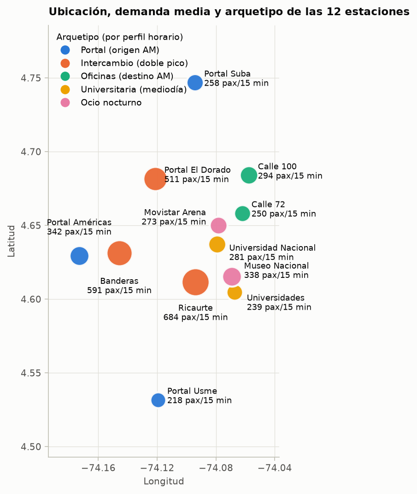
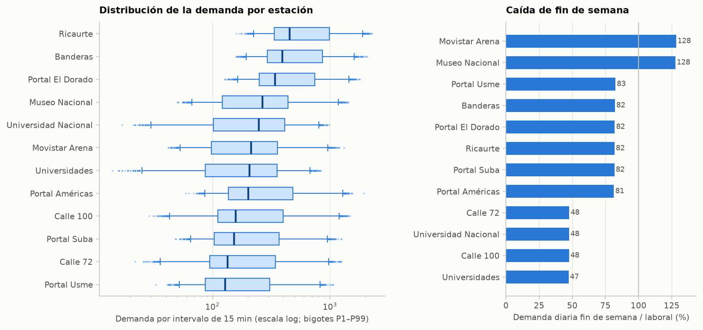
| ID | Estación | Corredor | Arquetipo | Media | P95 | Fin de semana | Lluvia %/mm | Evento |
|---|---|---|---|---|---|---|---|---|
| 05000 | Portal Américas | Américas | Portal (origen AM) | 342 | 974 | 81 % | −3,8 | +8 % |
| 03000 | Portal Suba | Suba | Portal (origen AM) | 258 | 754 | 82 % | −5,6 | +12 % |
| 09000 | Portal Usme | Caracas | Portal (origen AM) | 218 | 629 | 83 % | −6,2 | +9 % |
| 07111 | Ricaurte | NQS | Intercambio (doble pico) | 684 | 1.627 | 82 % | −2,7 | +9 % |
| 05100 | Banderas | Américas | Intercambio (doble pico) | 591 | 1.369 | 82 % | −3,7 | +9 % |
| 06000 | Portal El Dorado | Calle 26 | Intercambio (doble pico) | 511 | 1.205 | 82 % | −5,2 | +8 % |
| 02300 | Calle 100 | Autonorte | Oficinas (destino AM) | 294 | 909 | 48 % | −9,8 | +10 % |
| 09122 | Calle 72 | Caracas | Oficinas (destino AM) | 250 | 768 | 48 % | −7,4 | +8 % |
| 07107 | Universidad Nacional | NQS | Universitaria (mediodía) | 281 | 662 | 48 % | −8,6 | +8 % |
| 06111 | Universidades – CityU | Calle 26 | Universitaria (mediodía) | 239 | 569 | 47 % | −6,3 | +11 % |
| 10009 | Museo Nacional | Carrera 7-10 | Ocio nocturno | 338 | 910 | 128 % | +5,9 | +40 % |
| 07105 | Movistar Arena | NQS | Ocio nocturno | 273 | 729 | 128 % | +3,6 | +38 % |
Media y P95 en pax/15 min. «Fin de semana» = demanda diaria fin de semana / laboral. Lluvia y evento son coeficientes del modelo log-lineal por estación (todos con p < 1e−9).
Calendario
Solo importan dos tipos de día
La serie diaria repite el mismo patrón las seis semanas completas. Al controlar por perfil, el viernes queda en −1,0 % y el domingo en +1,6 % frente al sábado: son efectos pequeños y solo significativos en algunas estaciones. Los dos festivos del periodo no se distinguen de un día laboral.
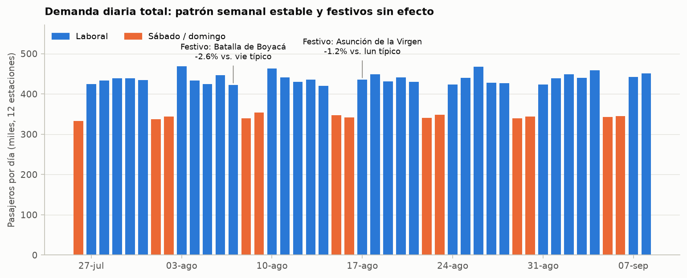
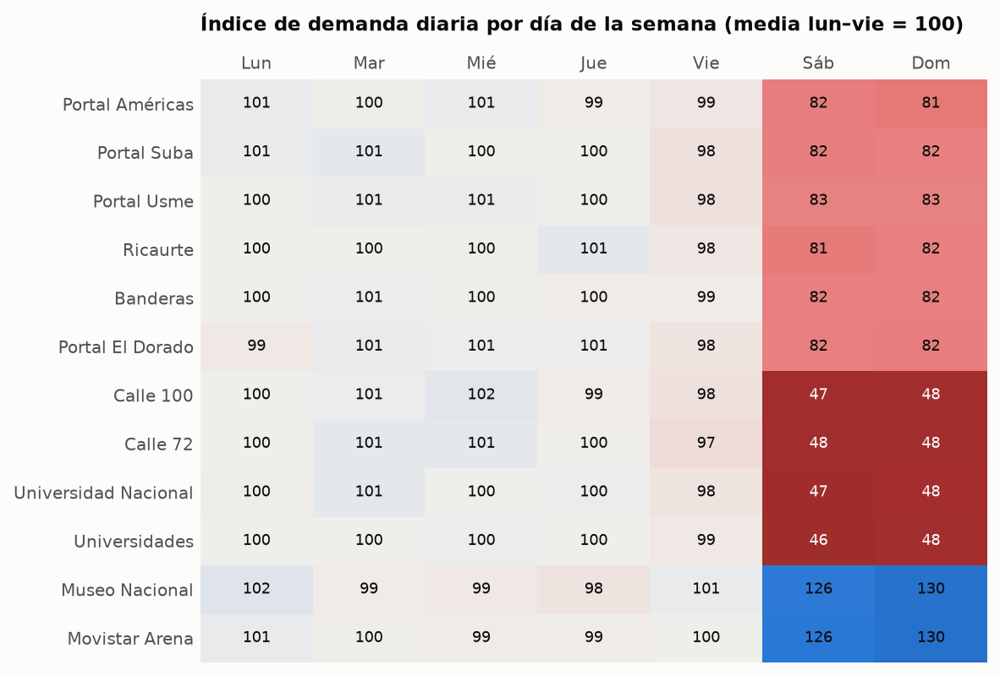
Usa day_type ∈ {laboral, fin_de_semana} en lugar de 7 dummies de día: cuesta menos parámetros y el perfil queda más estable. Guarda is_holiday en el calendario, pero no la uses como feature mientras no aparezca un efecto. Si el escenario introduce festivos con efecto, el monitoreo de nivel lo va a detectar.
Perfiles horarios
Cinco formas de moverse por la ciudad
Normalicé el perfil de cada estación por su media y clasifiqué la forma resultante con una regla transparente según dónde cae el pico. Después lo validé con un clustering jerárquico independiente.
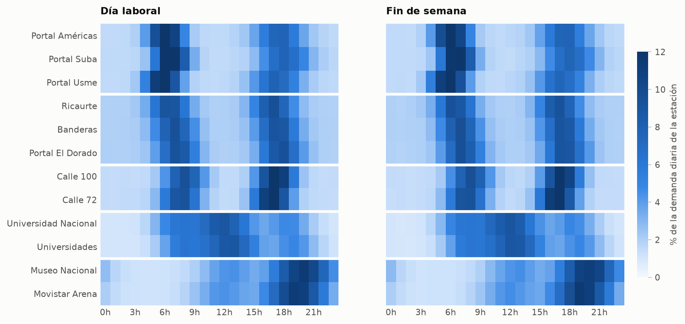
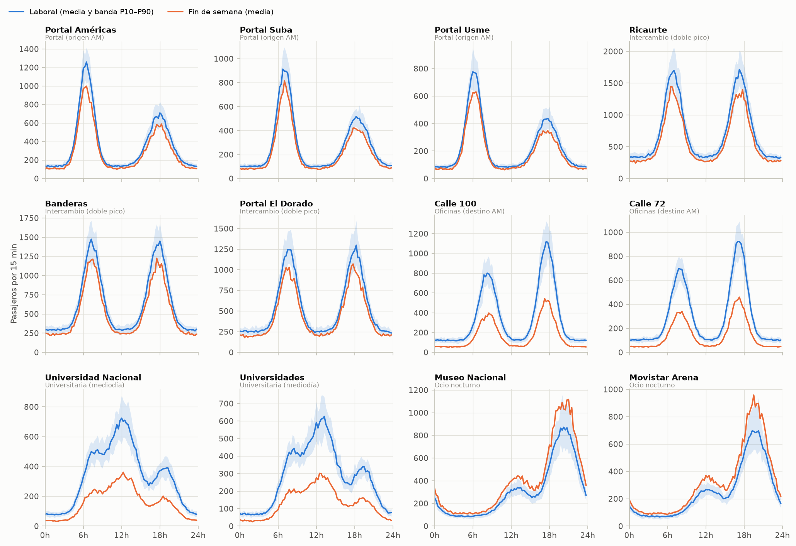
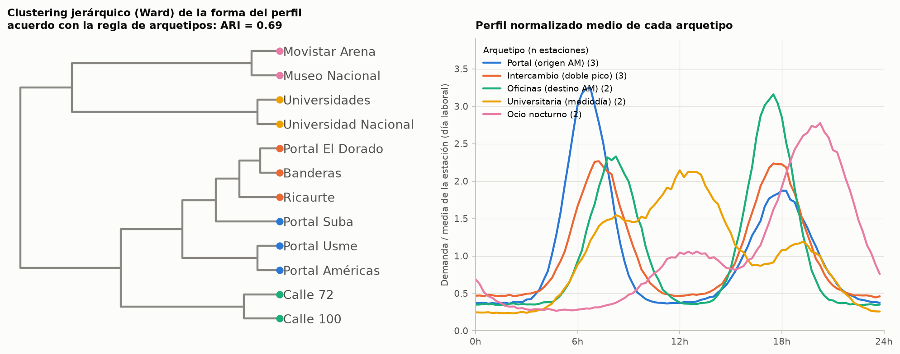
Un modelo global con station_id × slot × day_type (o con el perfil histórico como feature) captura casi toda la señal. El arquetipo puede servir como feature jerárquica para compartir información entre estaciones parecidas, sobre todo si llegan estaciones nuevas o si un cambio afecta a un tipo de zona completo.
Contexto
Clima: la lluvia es la única señal exógena útil
El contexto es uno solo para toda la red. Llueve casi siempre un poco: 25 mm/día en promedio y un máximo de 62,7 mm. La lluvia pierde la mitad de su autocorrelación en 1 hora y no tiene hora preferida. La temperatura, en cambio, es un ciclo diurno casi fijo, con desviación de 0,07 °C entre las medias diarias.
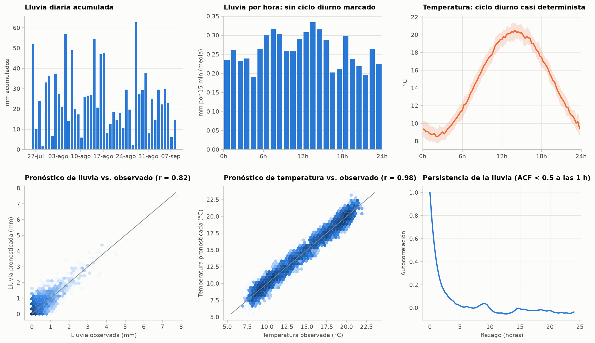
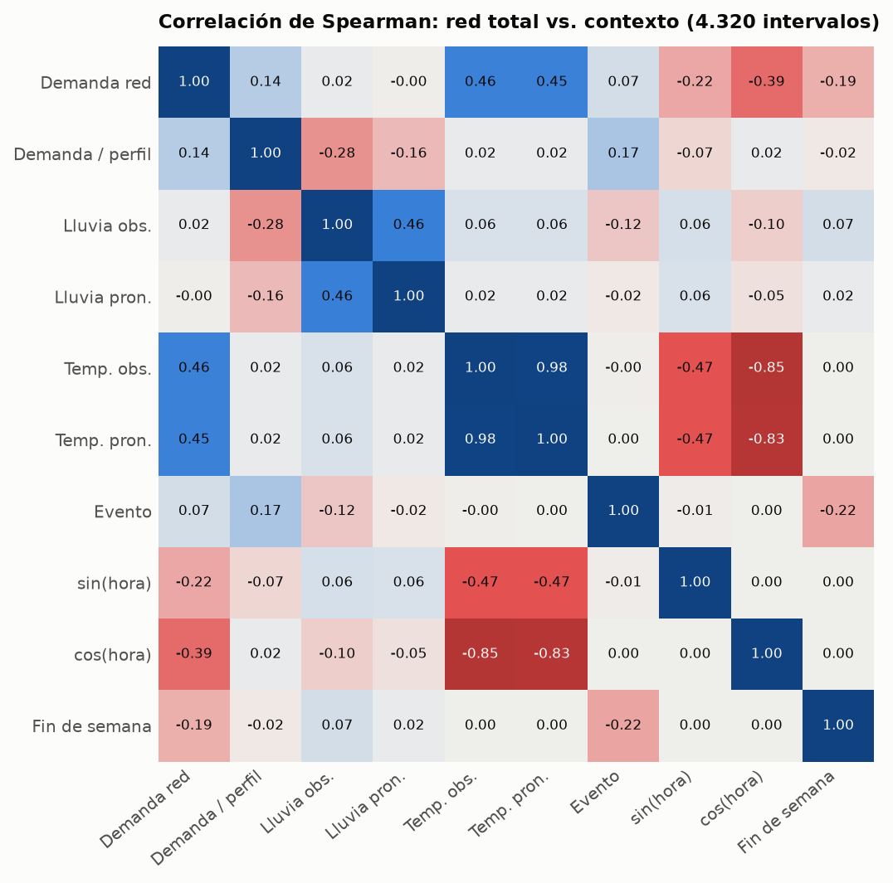
La temperatura parece predictiva, pero no lo es: repite la información de la hora. En 0 de 12 estaciones tiene un coeficiente significativo al controlar por el perfil. Mejor excluirla, o el modelo aprenderá una relación que se rompe si cambia el clima.
Lluvia
Menos viajes a trabajo y estudio, más a ocio
La lluvia reduce la demanda en las 10 estaciones de trabajo, estudio y conexión, y la aumenta en las dos de ocio nocturno. El efecto es inmediato: la correlación con el residuo es máxima en el rezago 0 y decae al mismo ritmo que la autocorrelación de la lluvia. No hay un efecto retardado propio.
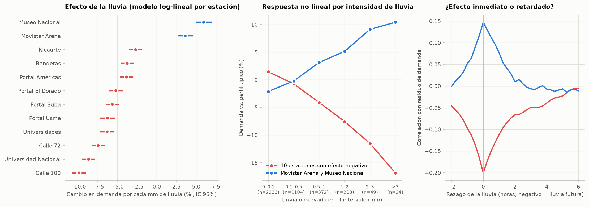
Usa rain_forecast, que es lo que se conoce al momento de predecir, con una pendiente por estación o por arquetipo. Ganancia media en R²: +0,10 pp con el pronóstico y +0,16 pp con la lluvia real. En varianza parece poco, pero en WAPE vale +1,9 puntos en Movistar Arena y +2,1 en Museo Nacional (figura 18).
Si el ciclo de predicción recibe rain_mm observada hasta el cutoff, sirve para horizontes muy cortos, porque la lluvia persiste cerca de 1 hora.
Eventos
Noches de evento: pulsos gaussianos a las 19:45
Hay 5 eventos en 45 días: lun 3 ago, lun 10 ago, mar 18 ago, mié 26 ago y vie 4 sep. Todos llegan a intensidad 1,0 a las 19:45. Tres tienen σ ≈ 2,25 h (intensidad > 0,5 durante 5,25 h) y dos σ ≈ 3,5 h (8,25 h). Ninguno cayó en fin de semana.
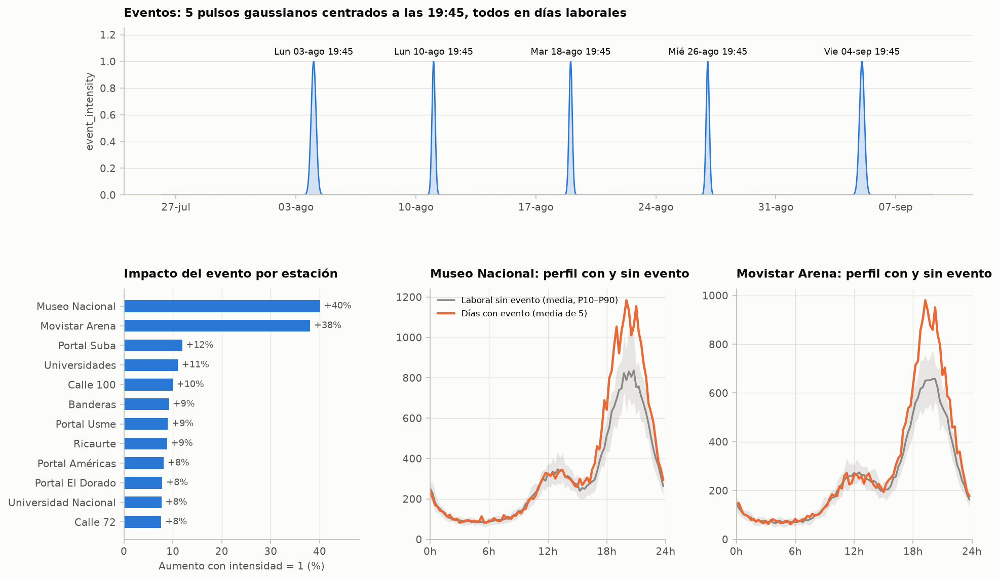
event_intensity entra como variable continua y multiplicativa: log(demanda) += βestación · intensidad. Con solo 5 eventos, estimar un β por estación es frágil. Es más robusto un β por arquetipo (ocio ≈ +0,33 en log, resto ≈ +0,09).
Hay que confirmar que la intensidad futura esté disponible al predecir (/v1/context o el ciclo). Si no lo está, el evento va al monitoreo y no a las features.
Estructura temporal
Mucha estacionalidad, casi nada de memoria
La serie cruda tiene autocorrelación fuerte en 1 y 7 días, y más en las estaciones de un solo pico. Pero cuando quito el perfil, la lluvia y el evento, el residuo queda casi independiente: ACF de 0,04 a 15 min, 0,04 a 1 hora y −0,04 a 24 horas.
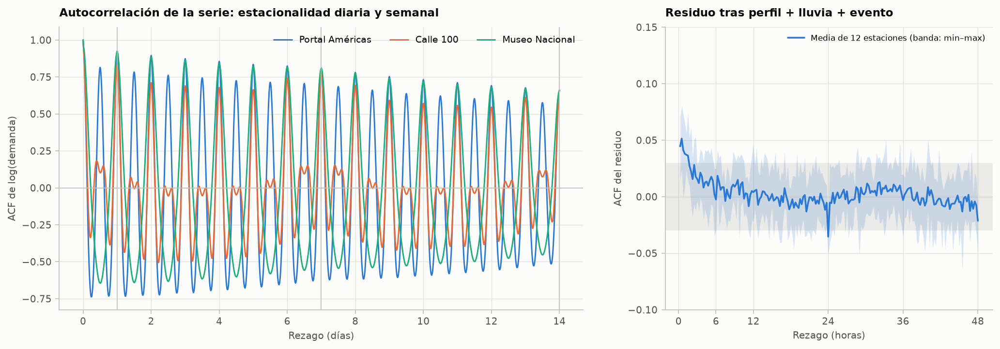
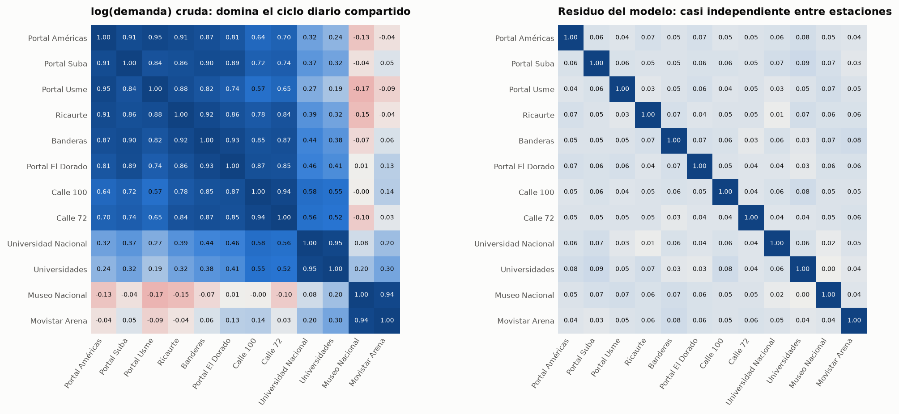
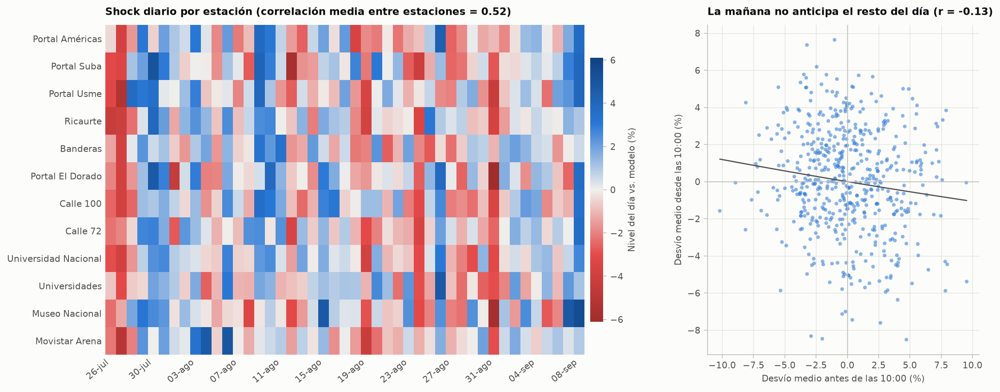
Rezagos como t−1 o t−96 casi no aportan como features. El baseline t−1 día es el peor (77,9) porque arrastra el ruido de ayer. Para los cuatro horizontes esto es una buena noticia: un modelo basado en perfil + contexto debería perder muy poca precisión al alargar el horizonte.
La información reciente sí sirve para medir cambios de nivel sostenidos (drift) con ventanas de varios días, no de horas.
Ruido
Ruido multiplicativo con un CV de ~15 %
La varianza de cada celda (estación, tipo de día, slot) crece como media1,78, muy por encima de un Poisson (varianza/media mediana = 5,2) y cerca de un CV constante. En escala log, el residuo es casi normal: sd 0,150, asimetría −0,19, curtosis en exceso 0,27.
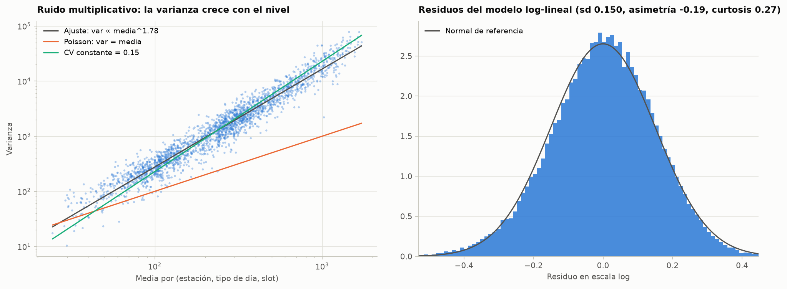
Modela en log(demanda) o usa una pérdida adecuada (Poisson/Tweedie en boosting, o MAE). Para WAPE, predice la mediana (exp(ŷlog)), no la media: la corrección +σ²/2 empeora el error absoluto. Los intervalos de predicción salen directamente como exp(ŷ ± 1,28·0,15) para un P10–P90.
Estabilidad
Una deriva lenta que conviene vigilar
El README anuncia cambios de patrón durante la competencia. Ya en el corte estático, 7 de 12 estaciones tienen una tendencia lineal positiva significativa (media de +0,24 % por semana). En los dos últimos días (7–8 sep), 8 estaciones quedan entre +3 y +6 % sobre el perfil (media de la red: +3,0 %).
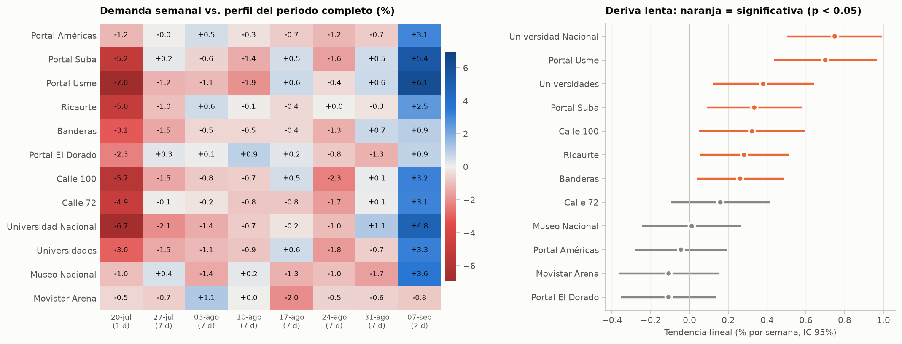
Con una sd diaria de 2 %, un +3–6 % en dos días tiene una probabilidad baja pero no despreciable de ser azar compartido: el 8 sep es el día con el shock común más alto. Buen criterio de alerta: media geométrica de demanda / perfil en una ventana de 3–7 días fuera de ±3 % en varias estaciones a la vez. Es la vista v_observations_vs_profile del esquema.
Síntesis
¿Qué determina la demanda?
Añadí los componentes uno por uno y medí cuánta varianza de log(demanda) explica cada uno. El orden importa poco, porque los factores son casi ortogonales.
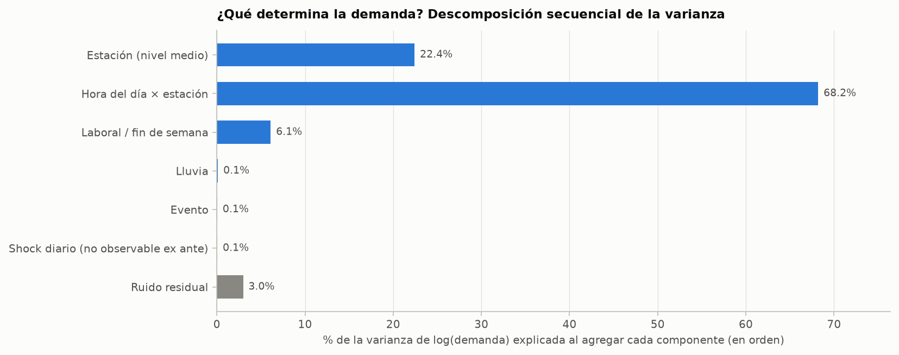
Lluvia y evento explican poca varianza global porque afectan a pocos slots y a pocas estaciones, no porque sean irrelevantes. Donde actúan mueven la demanda un 10–40 %, y ahí es donde un modelo sin contexto acumula su peor error.
Referencia de desempeño
Baselines con la métrica oficial
Validación temporal: entrené hasta el 1 sep 23:45 y evalué del 2 al 8 sep (7 días, con el evento del 4 sep). Accuracy = 100 × (1 − WAPE) por estación, promediada.
| Método | Accuracy | Factible en producción | Comentario |
|---|---|---|---|
| Ingenuo t−1 día | 77,89 | sí | Arrastra el ruido de ayer y confunde viernes con sábado |
| Ingenuo t−7 días | 83,11 | sí | Respeta el tipo de día, pero con una sola muestra |
| Perfil histórico (mediana estación × tipo de día × slot) | 87,94 | sí | El baseline que hay que superar |
| Log-lineal: perfil + lluvia pronosticada + evento | 88,44 | sí | El mejor factible. +1,9 y +2,1 pts en las estaciones de ocio |
| Log-lineal: perfil + lluvia real + evento | 88,53 | parcial | Solo si hay lluvia observada del horizonte |
| Cota: conoce el shock diario | 88,70 | no | Ceiling práctico con esta información |
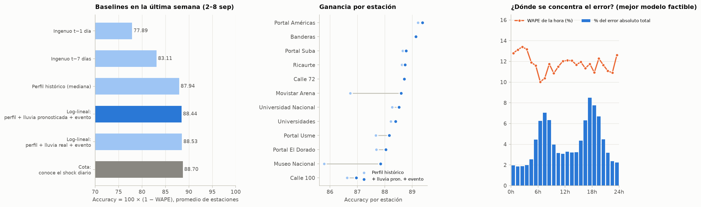
Recomendaciones
Implicaciones para el modelo
| Feature o decisión | Evidencia | Prioridad |
|---|---|---|
station_id × slot (0–95) × day_type, o el perfil histórico como feature | 96,8 % de la varianza (fig. 17) | esencial |
| Objetivo en log (o pérdida Poisson/Tweedie) y predicción de la mediana | Ruido multiplicativo, CV 15 % (fig. 15) | esencial |
rain_forecast con pendiente por estación o arquetipo | −9,8 % a +5,9 % por mm, signo según arquetipo (fig. 10) | alta |
event_intensity con efecto por arquetipo | +38–40 % en ocio, +8–12 % en el resto (fig. 11) | alta |
| Corrección de nivel por ventana reciente (3–7 días) o reentrenamiento con decaimiento temporal | Tendencia de +0,24 %/sem y cambios anunciados (fig. 16) | alta |
archetype como feature jerárquica | 5 formas estables, ARI 0,69 (fig. 06) | media |
is_friday, is_sunday | −1,0 % y +1,6 %, poco consistentes | baja |
Rezagos t−1, t−4, t−96 | ACF del residuo ≈ 0,04 (fig. 12) | baja |
is_holiday | Sin efecto medible (fig. 03) | monitorear |
temperature_c, temperature_forecast | Colineales con la hora, 0/12 significativas (fig. 09) | excluir |
Estrategia de validación
- Backtesting con origen móvil (rolling-origin) por semanas y siempre con separación temporal.
- Reportar accuracy por estación y por horizonte: las estaciones de ocio son las más sensibles.
- Comparar siempre contra el perfil histórico (87,9), no contra el ingenuo.
Señales de reentrenamiento
- Nivel: media geométrica de demanda/perfil fuera de ±3 % en una ventana de 3–7 días.
- Desempeño: accuracy rolling de 24 h más de 2 pts bajo la de validación.
- Sensibilidad: β de lluvia o de evento re-estimado fuera de su IC 95 %.
- Forma: cambio en la hora del pico o en el reparto del día (fig. 04).
Persistencia
Esquema Postgres
EDA/schema.sql define 18 tablas y 5 vistas en el esquema pulso. Lo probé en Postgres 16 cargando las 51.840 observaciones reales, calculando WAPE desde las vistas y forzando violaciones de cada restricción clave. Está desplegado en Supabase (proyecto pulso-transmi, us-east-1, Postgres 17.6) mediante migraciones en supabase/migrations/, con RLS activo y acceso solo para service_role.
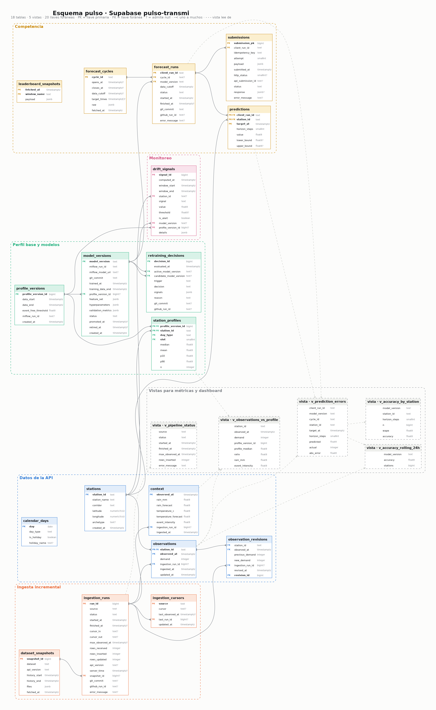
supabase/diagrams/generate_schema_diagram.py). Colores por dominio. PK/FK marcan llaves, ? indica columnas que admiten null, la línea con pata de gallo es una relación uno a muchos y las líneas punteadas indican de qué tablas lee cada vista. Abre la imagen para verla en tamaño completo.Datos de la API
stations (con archetype) · observations PK (station_id, observed_at) · context PK observed_at · calendar_days · observation_revisions (un trigger audita los valores reenviados)
Ingesta incremental
dataset_snapshots (hashes del corte) · ingestion_runs (estado, filas, error, commit, run de GitHub) · ingestion_cursors (el cursor exacto de la API)
Perfil base y modelos
profile_versions + station_profiles (mediana/P10/P90 por estación × day_type × slot) · model_versions (mlflow_run_id, commit, training_data_end, un solo activo) · retraining_decisions
Competencia
forecast_cycles · forecast_runs (client_run_id, cutoff) · predictions (horizon_steps, intervalo) · submissions (Idempotency-Key única, payload y respuesta) · leaderboard_snapshots
Monitoreo
drift_signals (nivel, WAPE rolling, sesgo, sensibilidad a lluvia/evento, forma, calidad) · vistas v_prediction_errors, v_accuracy_by_station, v_accuracy_rolling_24h, v_observations_vs_profile, v_pipeline_status
Decisiones que vienen del EDA
station_id textcon CHECK^[0-9]{5}$.- CHECK de alineación a 15 min (epoch % 900).
- Perfil por
day_type, no por día de la semana. - Contexto a nivel red y
event_intensity double precision.
Las tablas forecast_runs, predictions y model_versions guardan exactamente lo que pide POST /v1/submissions (schema 1.0): cycle_id, client_run_id, data_cutoff, model{version, trained_at, training_data_end, git_commit} y hasta 100 predicciones (station_id, target_at, value). 12 estaciones × 4 horizontes = 48 por envío.
Trazabilidad
MLflow y reproducción
El EDA queda versionado como un run del experimento pulso-transmi-eda: los parámetros del corte (versión de API, rango, SHA-256 de cada archivo), el dataset como input con su digest, 98 métricas (efectos, baselines, ruido, drift) y como artefactos las 18 figuras, las tablas, findings.json, schema.sql y este reporte. Así cada conclusión queda atada al corte del que salió, y los modelos futuros se comparan contra estas mismas métricas.
# desde la raíz del repo
python -m pip install -e '.[ml]' -r EDA/requirements.txt
python EDA/eda.py # usa EDA/data si existe; --refresh vuelve a descargar
mlflow ui --backend-store-uri sqlite:///mlflow.db # http://127.0.0.1:5000Qué versionar con MLflow
- EDA: un run por corte de datos (este).
- Entrenamiento: params, features,
training_data_end, métricas por estación y horizonte, modelo registrado. - Decisiones de reentrenamiento: un tag con la señal que lo disparó.
Dónde vive el tracking
Por defecto en sqlite:///mlflow.db + mlartifacts/ (ignorados por git). Para compartir entre GitHub Actions y el equipo, apunta MLFLOW_TRACKING_URI a un servidor con backend Postgres en una base separada de pulso, y usa almacenamiento de objetos para los artefactos.
La demanda, el clima y los eventos son sintéticos: los efectos describen el generador, no a Bogotá. Solo hay 45 días y 5 eventos, así que los β de evento por estación tienen incertidumbre. Falta confirmar qué contexto futuro entrega cada ciclo de predicción. Y /v1/meta expone generator_seed: no conviene usarlo, porque el reto evalúa la operación del pipeline.